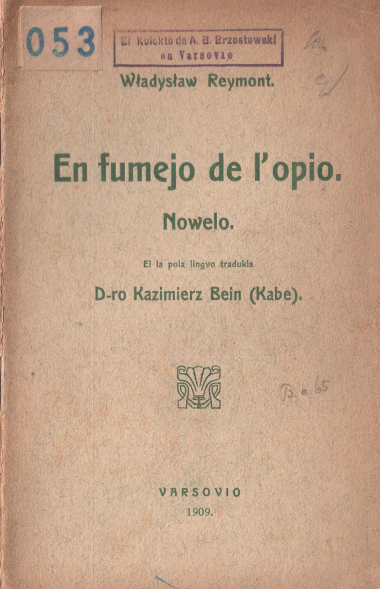
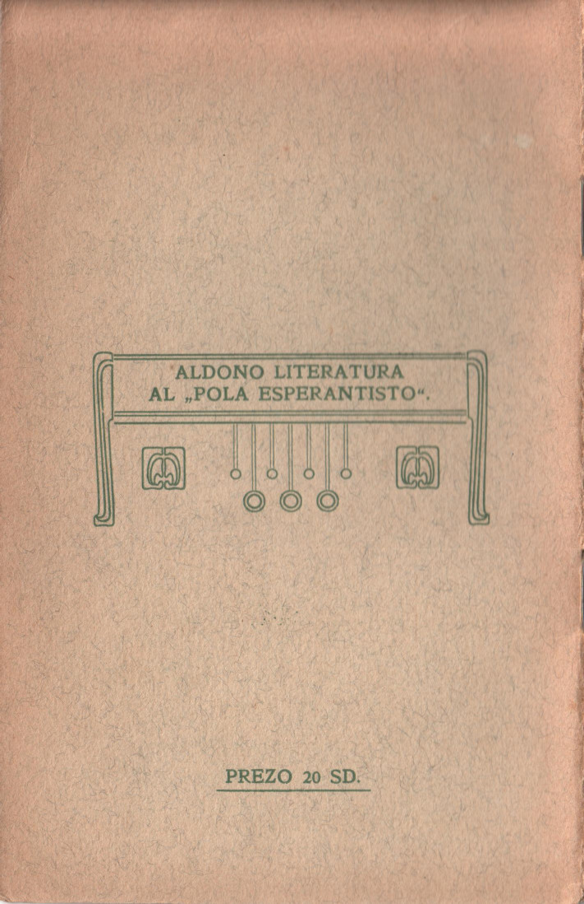

PRESEJO: BLIŃSKI KAJ W. MAŜLANKIEWICZ, VARSOVIO, NOWOGRODZKA 17, 1908
La ŝipo ree saltis tiel vivege, kiel ĉevalo neatendite frapita per sprono; kelkaj pasaĝeroj de la supera ferdeko de la 1—a klaso falis de la kanaj apogseĝoj sur la najbarojn, mi batis per la kapo iun helharan grandegulon, kaŝitan en flavan waterproof'on.
― Al la diablo! ― malbenis li pole.
Mi respondis same energie, ĉar en la sama momento mi frapis per la mano je la brako de l' apogseĝo.
― Ah, samlandano! ― ekkriis li, helpante min reveni al la egalpezo.
― Jes!
Ni de proksime ekrigardis la okulojn unu de la alia, ĉar la sola lanterno, kroĉita al la masto, malforte lumigis la ferdekon.
― Mi vidis vin, civito, en Parizo, sur Triumfa Arko.
― Vere, mi estis... ― sed mi ne povis rememori lian vizaĝon. ― Vi estas de Reĝolando [Ruslanda Polujo.] ― demandis mi, por ion diri.
― De la mondo! ― respondis li malvarme.
Mi ne demandis plu kaj ni sidis silente.
La maro ŝaŭmis kaj ŝaŭmis de la senforta kolero. La fajfo de la vento kaj la ritma bruo de la maŝinoj de l' ŝipo unuiĝis kun la sovaĝa krio de la maro, kiu de ĉiuj flankoj puŝis siajn kunmiksitajn ondojn kun brilantaj ŝaŭmaj puntoj, iris antaŭen, saltis, batis senĉese la ferajn flankojn de la ŝipo kaj falis frakasita en la senfundaĵon, kun bruo simila al la senforta kolero.
Nokto sen nuboj kaj sen steloj kovris la spacojn per verdeta nigro, kunfluis silente kun la maro kaj kvazaŭ ĉirkaŭprenis ĝin per sia malgaja potenco. Oni sentis ĝian malvarman kaj malsekan tuŝon. La konscio, ke oni estas pendigita inter du senfundaĵoj, la akvo kaj la spaco, ke oni dependas de la kaprica de elemento, kiu senĉese sin ĵetas en paroksismo de frenezo kaj ŝtelatendas, por engluti ĉion, kio kontraŭstaras al ĝi ― plenigas per stranga kerno de volupta maltrankvilo. Oni sidas sorĉita, kaj estas tiam vera ĝuo la vento kaj la batoj de la elemento ― oni vivas la vivon de la maro.
Oni naĝas sur la dorsoj de la ondoj, kies stranga blankeco brilas, kvazaŭ konturoj de blankaj fantomoj, kaj oni aŭskultas la voĉojn de la maro.
Oni sentas tiam nek timon, nek la vivon, oni sentas nur, ke bone estas scii kaj pensi pri nenio, pasive cedi al la ondoj kaj naĝi en ĉi tiu nokto, ĉe la kanto de la uragano. La animo kvazaŭ unuiĝas kun la mallumo kaj disfluas en la spacoj. La lumturoj de la malproksima ankoraŭ Newhaven komencis brileti kaj poste ekflamis iliaj oraj steloj, kvazaŭ aŭroro sur la nigra horizonto.
La voĉoj de la ondoj potenciĝis, la ŝipo saltis pli kaj pli forte kaj kvazaŭ kuris for de ĉi tiuj malvarmaj kaj malbonaj ĉirkaŭprenoj de la maro. Ni malsupreniris en la kajutojn, ĉar la ŝipo komencis trumpeti sian potencan signalon kaj la ĉenoj de la havenaj lumoj tra batis la nokton.
La samlandano prezentis min al iu Ĥino, kiun li nomis sia amiko; ni sidigis, por trinki teon kaj babili.
― Ĉu vi veturas Londonon?
― Jes, ni veturas tien ĉiumonate.
La Ĥino kun subtilaj trajtoj, kvazaŭ li estus unu el la malgrandaj figuroj, skulptataj tiel majstre de liaj samlandanoj, silentis.
― Mia amiko komprenas nek pole, nek angle, sed li estas brava knabo. Ni konigis en Formozo. Mi estis en la Legio, li prezentis, oni diras, la Nigrajn standardojn; en la komenco oni proponis al li la pendigilon, sed poste oni ekkompatis lin kaj permesis al li vivi. Ni koniĝis en Pambo, ekvivis amike, adaptis sin unu al la alia kaj estas kontentaj.
― Ĉu vi bone konas Londonon? ― demandis mi, ĉar ekbrilis al mi ideo, ke eble li konas la adreson de la fumejo de l'opio, kiu, kiel mi sciis, ekzistas en Londono, sed kies adreson mi ne povis ricevi, malgraŭ persista serĉado.
― Mi konas ĝin sufiĉe bone.
― Eble okaze vi scias ion pri la fumejo de l' opio?
La Polo iom reiris, fikse ekrigardis min, diris kelke da vortoj al la Ĥino, kun kiu li interŝanĝis rigardon de interkonsento, ĉar iu mistera kaj malforta rideto trakuris iliajn vizaĝojn, kaj sin turnis al mi.
― Ĉu vi jam fumis iam?
― Ne, neniam, sed mi dezirus. Mi volus konvinkiĝi, kiom la efektivaj impresoj de fumanto de l' opio estas similaj al tio, kion oni rakontas.
― Inter la priskriboj kaj la realeco la simileco estas tre malgranda. Absolute ne eble estas priskribi aŭ rakonti la impresojn.
Mi ekrigardis lin mirigita. ĉar kiam li finis sian frazon, liaj okuloj kvazaŭ vualiĝis, la vizaĝo rigidiĝis kaj sur la lipoj vagis stranga rideto de svenado.
― Mi konas tion tre bone. Mi estis sufiĉe longe en Ĥinujo, cetere ankaŭ en Londono efektive ekzistas loko, kie oni povas fumi pipon de opio.
― Vi do konas la adreson? ― ekkriis mi kun ĝojo.
― Ĉu ni konas? Ni estas konstantaj abonantoj ― respondis li mallaŭte.
Mi komencis insiste peti lin pri la enkonduko. Li interŝanĝis kelke da vortoj kun la Ĥino kaj ni baldaŭ aranĝis la aferon. Oni postulis nur: sterlingon por la eniro kaj solenan parolon, ke oni ne perfidos la sekreton.
En Newhaven ni eniris en la londonan vagonaron kaj post kelke da horoj mi jam atingis la stacidomon de Victoria.
Ni interŝanĝis la vizitkartojn kaj interkonsentis kunveni je la oka horo vespere.
Kun granda malpacienco mi atendis ĉi tiun vesperon. Mi apenaŭ sukcesis konvinki mian kunulon, ke li partoprenu en la ekskurso, ĉar sola mi iom timis riski promenadon kun fremdaj homoj en nekonatajn kvartalojn de Londono.
Je la oka horo miaj konatoj jam estis en la loko de nia kunveno. En Charing Cross ni eniris en vagonaron kaj ekveturis al la Dokoj kaj Bridge Tower.
Post pli ol unuhora veturado ni forlasis la vagonaron en unu el la ekstremaj stacioj, tie ni prenis cab'on kaj post duonhoro ni jam staris antaŭ longa domo el ruĝaj brikoj.
Tio estis la fumejo.
* * *
Mia samlandano plenumis ĉiujn formal- aĵojn, kaj mi kun la doktoro eniris en altan kaj longan salonon
Estis tie jam dekkelko da personoj kaj senĉese venis novaj. Mi sidigis sur unu el la sofo], kiuj staris apud la muroj, en densejo de grandegaj palmoj. Elektra lumo el verde-oraj tulipoj, balanciĝantaj ĉe la plafono kaj inter la branĉoj de la arbetoj, verŝis koloran brilon. Blankaj, molaj tapiŝoj mutigis la paŝojn. Estis silente. Tiuj, kiuj parolis, parolis mallaŭte murmuretante, aliaj sin etendis silente sur la flavaj silkaj sofoj.
Fontano en la mezo de la salono verŝis grandegan kaskadon de pulvorigita akvo kaj brilis diverskolore.
La akvo, kolorigita per la reflektoroj, similis ĉielarkon, ŝprucantan en mirakla luma kolono de la fundo de marmora cisterno, kaj sonorigis melodion, nepriskribeble dolĉan.
El arĝentaj incensujoj en la niĉoj fluis malpezaj, kvazaŭ sunaj rubandoj de fumo kaj distrenis en la salono nebulojn de ekscitanta odoro.
Ventumiloj el grandegaj blankaj strutaj plumoj, en bronzaj ingoj, ŝirmis kelkajn sofojn.
Estis tiom da artista beleco en la aranĝo de la salono, ke kun ĝuo oni enspiris ĉi tiun harmonion de brilaj koloroj, kvankam duonkovritaj, de duonlumo, de delikataj konturoj de molaj silkaj, de silento interrompata de la murmuretoj de la fontano kaj de la plaŭdoj de verdaj serpentoj kun plataj kapoj en la cisterno.
Eĉ sen la opio oni povis revi dolĉan sonĝon.
La lumoj tute estingiĝis, nur la akva kolono brilis kiel oro, rubeno, kalcedono kaj smeraldo.
El la niĉoj iris iaj malgrandaj estaĵoj kun flametoj en la manoj, disiĝis en la salono kaj malaperis en la ombro de l' palmoj.
Stranga tremo trapenetris min kaj senmovigis. Mi fermetis la okulojn kun timo miksita kun ĝuo. Io tuŝis min delikate kaj mi ekaŭdis ekstreme melodian voĉon, Mi levis la palpebrojn; antaŭ mi, kiom mi povis distingi en tia krepusko, staris juna knabino, unu el tiuj filigranaj Japaninoj, personigantaj la ĉarmon kaj dolĉecon. Ŝi estis tiel bela, ke ŝi ŝajnis al mi pli iluzio, ol virino; mi ne povis deturni de ŝi miajn okulojn. Ŝi donis al mi piptubon kun grandega sukceno ĉe la ekstremo. Mi prenis ĝin en la buŝon, ŝi ekgenuis kaj per siaj ridinde malgrandaj manetoj formis konuson el opio, metis ĝin en la truon de la pipo, proksimigis flameton kaj mallaŭte en plej pura angla lingvo murmuretis:
― Enspiru en vin la tutan fumon.
Mi obeis.
Mi eksentis la abomenan odoron de la bruligita opio. Stranga pezeco komencis disflui en miaj vejnoj, malleviĝis miaj palpebroj, la pipo elglitis el miaj manoj, sed mi ne havis sufiĉe da forto por ĝin reteni. Mi sentis, ke mi defalas, mi volis salte leviĝi, per la resto de la konscio mi ĵetis min antaŭen, sed stranga kaj forta doloro trapenetris min kaj mi memoras, ke mi estis falanta en la miraklan cisternon.
* * *
Mi rekonsciiĝis. Mi memoris, ke mi fumis opion. Mi memoris multajn antaŭajn aferojn. Mi pensis, ke ĉio jam estas finita, mi do ĉirkaŭrigardis la ĉambron. Nenio restis. Blua senfina spaco ĉirkaŭis min, Blanketa lumo penetris de ekstere. Mi sentis, ke ekregas min tiu speco de forta mirego, kiu kondukas al manio. La timo de izoleco kaj frenezo ekregis min, sed tio daŭris nelonge.
― Mi sonĝas! ― pensis mi. Mi ekrigardis min mem. Mi vidis nenion. Jes, kiam per movo mi volis levi la manon, mi ne trovis ĝin. Mi tute ne okupis spacon.
Mi eksentis, ke mi estas sole la konscio
Mi rimarkis, ke mi ne vidas, ne sentas, ne aŭdas, ke mi nur scias. Blanketa nubo de nebulo ― tio estis mi. Kiom da fojoj mi rememoris ion, tiom da fojoj flamoj bluaj kaj purpuraj, kvazaŭ fulmoj, elflugis el tiu mia „mi“.
Mi sentis en mi la trankvilon de la senlima feliĉo. Mi trakuradis iajn sorĉlandojn. Mi naĝis en verda torento de lumo. Mi estis en la universo. Miliardoj da sunaj balanciĝis ĉirkaŭe, kvazaŭ floroj blankaj, flavaj kaj purpuraj. Sennombraj turniĝantaj flamoj trakuris la spacojn. Mi vidis ridetojn de la steloj. Mi sentis nenion, nur nepriskribeblan feliĉon. Mi estis ĉie, kaj mi ne povis voli; mi estis kvazaŭ disfluinta, trapenetranta, ĉie ĉeestanta. Tiam mi eksentis teruran doloron, kvazaŭ iu prenus mian animon per feraj brulruĝaj manoj kaj ekpremus tutforte. Mi perdis la konscion.
* * *
― Enspiru ĉion ― murmuretis la japanino, ekbruligante ankoraŭ pli grandan konuson de opio.
Mi enspiris.
Rea aliaj mondoj!
La miraklaj fabeloj de Ŝeĥerazada, la ĝardenoj de Loreley, la palacoj de !' hirundoj en la profundo de la lagoj ― ne estis tiel belaj, kiel tio, kion mi vidis. Tio estis nek tero, nek ĉielo, nek sonĝo, nek realaĵo, tio estis io, por kio la homa lingvo ne posedas vortojn, la cerbo ― ideojn.
Ĉirkaŭis min arboj, homoj, tero ― el flamoj. Ĉio estis nur konturo. Blindiganta brilo, plena de ridetoj, vortoj, ekrigardoj ĉirkaŭis min de ĉiuj flankoj. La konturoj moviĝis, iris, disiĝis kaj ree kuniĝis. Kolonoj de kolon lumo, fajraj pluvoj, {lamaj kugloj rondiris senĉese ĉirkaŭ mi.
Poste ĉi tiuj briloj kvazaŭ diskuris, mi ekvidis malhelan bluon de ĉielo,plenade helaj steloj kaj iajn ruĝajn tapiŝojn sub mi. Senfinaj vicoj de oraj kolonoj elkreskadis kvazaŭ arbaro, Grandegaj filikaj folioj kun longaj vizaĝoj, signitaj de verdaj vejnoj, balanciĝis kun dorma rideto, Mi ne vidis la okulojn, buŝojn, trajtojn, mi vidis nur la ridetojn. Poste io, kvazaŭ muziko de harpoj, fluis de la spaco, kaj el ĉi tiuj brilaj sonoj elnaĝis virinaj figuroj. Ili sin klinis al mi, ĉirkaŭprenis min kaj dancis. Mi vidis, kiel iliaj diverskolore brilantaj vestoj flagris antaŭ mi, kvazaŭ blanka rubando sur ora kaj purpura fono, kvazaŭ grenkampo aŭtune, implikita de araneaĵo.
Ili preterpasis, revenis, ĉirkaŭis min tiel, ke mi sentis tuŝon de la oraj brakoj, la fajron de la pupiloj, brilantaj kiel granatŝtonoj; mi vidis, kiel iliajn jaspisajn korpojn ruĝigis la sango, kvazaŭ la aŭroro la vitran supraĵon de lagetoj. Ili ridetis. La rideto ne havis buŝon, lipojn, signifon, ĝi estis ĉie kaj ne eble estis kontraŭstari al ĝia altiro. Mi kvazaŭ flugis sur ĝia ondo, iaj longaj haroj kovris min, kaj mi sentis buŝon sur mia buŝo, dolĉajn murmuretojn, kaj lumaj tuŝoj penetris min kun stranga dolĉeco.
Poste ia profundo de grandega arbaro. Kolosaj kverkoj, pinioj kun homaj vizaĝoj, kun longaj brakoj anstataŭ branĉoj. Profunda potenca kanto en ritmoj vastaj, kiel la universo, fluis de ĉiuj flankoj, kuniĝis kaj disiĝis en la mallumaj spacoj en pluvon de briloj pli kaj pli malfortaj. Grandegaj akvaj torentoj flugis de ĉie, pasis preter mi kaj dronis en kaskado de kantoj. Mi sonĝis, tamen kun plena konscio mi pensis:
― Ĉu mi dormas, vivas aŭ mortis?
Subite ĉio malaperis. Mi ekvidis la saman ĉambron. Mi iris de niĉo al niĉo, deklinis la ventumilojn kaj rigardis ĉion ― estis nenio, estis neniu. Estis kvazaŭ emanacio de ĉio; sole kosmaj korpoj de arboj, homoj, mebloj malklare aperis kvazaŭ ombroj. Mi iris antaŭen.
Mi ekvidis min mem.
Ne, eĉ la impreson mi ne scios resumi.
Mi rigardis min, kuŝantan sur la sofo. Se mi tiam havus cerbon, kiel ordinare, mi freneziĝus.
Mi volis voki ĉi tiun samulon, mi ne povis, ĉar mi ne estis formo, mi estis etero, koncepto. Uragano de terura premego bolis en mi.
― Mi mortis... mortis... ― pensis mi kun mordanta malespero, terura malvarmo spiris sur min.
― Kie mi estas? Kio okazis kun mi? ― jen pli malpli tiel formuliĝis miaj pensoj. Mi vagis en la ĉambro, revenis al la sofo,sur kiu mi vidis min kuŝantan, ĝis fine mi venis al granda spegulo. Mi ekvidis la glatan supraĵon, kvazaŭ tra nebulo reflektantan la konturojn de l' objektoj ― sed min mi ne vidis en ĝi.
― Helpon! Veku min!...
Ŝajnis al mi, ke mi krias, sufokita per spasmo de senlima timo.
* * *
― Ĉu vi deziras ankoraŭ? ― demandis mallaŭte la Japanino.
La ventumilo delikate murmuretis kaj faris refreŝigan blovon. Mi sentis tion, mi aŭdis la voĉon, sed mi ne kuraĝis malfermi la okulojn, ĉar mi ne sciis bone, kie mi estas. Nur eksentinte la reordigon de la kuseno sub mia kapo, mi malfermis la okulojn, senkonscie prenis la pipon en la buŝon kaj ankoraŭ unu fojon avide enspiris la fumon.
La sama sento de falado kaj de vekiĝo.
Mi estis sur la maro. Mi sentis, ke mi naĝas kun disetenditaj brakoj, mi havis la ordinarajn formojn.
Ŝajnis al mi tiam, same kiel hodiaŭ, kiam mi skribas tion ĉi, ke mi posedas plenan konscion.
Mi naĝis, ne komprenante, de kie mi venis. Mi vidis la helan lazuron super mi, la sunon kaj la verdan akvon de la oceano, mi sentis la karesan tuŝeton de la vento, mi aŭdis malproksiman bruon de ondoj, batantaj ŝtonegojn. Mevoj kun longa krio sin levis super mi, poste ĉirkaŭis min granda silento, kvazaŭ ĉio estas mortinta kaj mutiĝinta. La mana disiĝis sub mi kaj mi falis en la profundon sur akvan kahelon, kaj de ĝi mi glitis pli kaj pli malsupren. Verda krepusko kovris al mi ĉion, mi vidis tra la akvo, ke la ĉielo estas ruĝa, la suno ― oranĝa, kaj mi falis, falis senhalte. Nek timo, nek doloro, nek miro moviĝis en mi. Poste mi naĝis tra ia interna rivero de la oceano, mi preternaĝis valojn plenajn de ŝtonegoj, de strangaj vegetaĵoj, de niĉoj, kaj mi atingis ian spacon, kie ĉio estis blanka.
Mi ektremis kaj kvazaŭ rekonsciiĝis el mia rigideco, ekvidinte subite ĉirkaŭ mi homajn figurojn, kun flugpendantaj haroj kaj kun larĝe malfermitaj okuloj. Ili naĝis rekte al mi, mi sentis ilian tuŝon, la glacian malsekecon de iliaj korpoj, abomenan molecon de iliaj haroj. Ili kuniĝis kvazaŭ en kronon, kaj ĉirkaŭis min de pli kaj pli proksime. Kien ajn mi rigardis, ― ĉie verdetaj kapoj, disŝiritaj manoj, piedoj, korpoj, buŝoj malfermitaj kvazaŭ por krio, kunpremitaj pugnoj, ― vera balo de kadavroj duone putrintaj sur la fundo de la oceano.
Estis senlima silento; mi kvazaŭ ŝvelis de abomeno kaj timo, sed mi ne povis krii, nek moviĝi.
La kadavroj falis sur min, baris al mi la vojon, puŝegis min, kaj mi, kiel unu el ili, kuŝis senviva, sen movo, en la profundo de nekonataj senfundaĵoj, kun pli kaj pli granda krio de l' malespero en la animo.
Poste ĉiuj ĉi korpoj kvazaŭ kuniĝis kaj kunkreskis unu kun alia; tio estis kvazaŭ grandega polipo kun miloj da kapo] kaj brakoj, kiu persekutis min. Mi vidis, ke ĝia blua buŝo malfermiĝas, ke ĝiaj longaj akraj dentoj terure minacas kaj en la okuloj komencas brili sangaj flamoj.
Iom post iom mi reakiris la volon kaj ian grandegan forton, mi ĵetis min antaŭen kun la malespero de l' frenezo, mi forkuris en la profundon, elnaĝis sur la supraĵon, platiĝis kiel ondo, disfluis en la krestoj de la ŝaŭmo, sed la monstro kuris post mi, persekutis min sur ĉiuj vojoj, kaptis kaj ĉirkaŭis de ĉiuj flankoj; mi sentis la akrecon de ĝiaj ungegoj, blovis sur min ĝia varmega spiro.
Kiam mi ne vidis plu eĉ unu colon da libera spaco, ĉie nur la volvaĵojn de la monstro, mi eksentis potencan forton en mi. Mi estis en ilia povo, mi vidis, ke la monstro sin ĵetis sur min.
Ne, ne eble estas priskribi la batalon, la ĉirkaŭprenon, kiam ĉirkaŭvolvis min la korpoj kiam mi eksentis miliardojn da dentoj en mi, nek la forton, kiu naskiĝis en mi.
Mi memoras nur, ke mi luktis kontraŭ la monstro, batis per la pugno, ŝiris per la dentoj, frakasis per la kapo kaj sentis varman fluon de la sango, kovranta min.
Poste nek doloro, nek io ajn... ekregis min frenezo de la batalo kaj venko.
La maro balancis, ĵetis pli kaj pli alten siajn ondojn; kvazaŭ forŝiritaj suproj de montoj, tondroj batis la maron per bluaj rubandoj de l' fulmoj; la uragano kriegis, kvazaŭ aro de satanoj. Rabiaj akvoturnoj batis la ĉielon, kaj la ventego balais la fundon. Mi eksentis min tiel forta, ke mi vidis, ke tra mi fluas la tuta potenco de la universo. Mi kuŝis sur la dorso de la ondoj kaj naĝis.
Tia senlima sento de feliĉo kaj trankvilo estis en mi, ke mi sentis, ke en mia cerbo estas ĉio: la vivo kaj la morto, la pereo kaj la kreo ― la tuta universo.
* * *
Kiam mi vekiĝis, mia kunulo sidis apud mi. Mi volis ankoraŭ fumi, sed li preskaŭ perforte elkondukis min. La tutan tempon li ne fumis, li nur gardis min.
Kiam mi skribas tion, aŭtuna vento bruas ekstere, subtila pluvo fluas sur la fenestraj vitroj kaj estas tiel malvarme kaj malgaje en la griza mondo, sur la sengrenaj kampoj, en la blua aero, ke kun vera ĝuo mi rememoras tiun ne sonĝon, sed sorĉan realaĵon. La priskribo ne estas preciza, sed la homa lingvo estas hakilo, per kiu oni devas skulpti la kristalojn de la sentoj: ne estas do mirinde, ke oni ricevas senformajn kaj malbelajn bulojn, anstataŭ statuoj.
